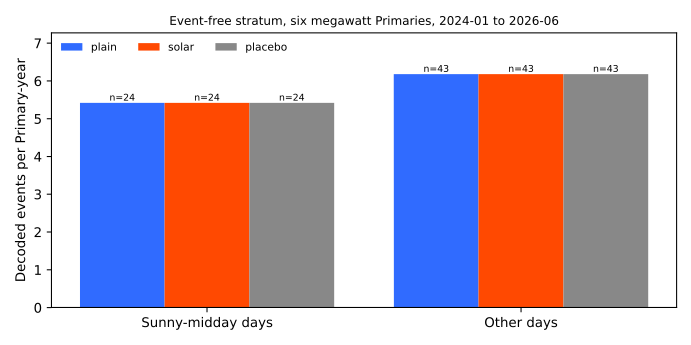
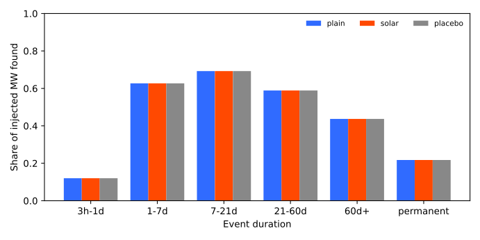
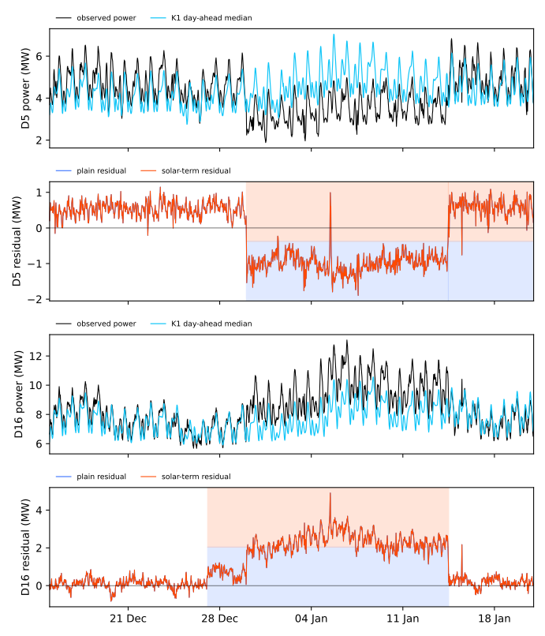

Does subtracting an explicit solar term from the Primaries' residuals reduce false events at sunny midday without losing injected events?
An explicit solar term changed nothing, because the demand forecast already allows for the sunshine at these substations. A Primary substation steps electricity down to the local distribution network. Some solar panels sit behind the substations without being metered, so they appear only as lower demand. The previous experiment, experiment 653, searched the demand forecast's errors (the residual) for load shifts and decoded 5.4 events per Primary-year in rows far from any logged event, which are probably false. We asked whether unmetered solar behind the six Primaries whose power is reported in megawatts (the MW Primaries: D5, D9, D10, D11, D14, and D16) explains some of them. We built a solar curve from ERA5 (the European Centre for Medium-Range Weather Forecasts' reanalysis of past weather), scaled it by the capacity of experiment 649, and subtracted it from each MW Primary's residual.
The fitted scale (the gain) is 0.003, against a gate of 0.05 below which the solar term is too small to be worth using. The solar arm therefore decodes the same 246 events as the plain arm, finds the same injected megawatts, and changes the error on sunny middays by 0.01% in the scored years. The verdict is not supported, and the contrasts below are reported as null, not as passes.
Terms used below
- Residual: actual power minus the forecast of the lag-free demand model of experiment 130, in MW. Sunshine that the forecast ignores makes the residual negative, so the gain is fitted on the negated residual.
- Gain (
g) and gate:gis the fitted scale of the solar term. The gate is a stop rule fixed in the plan: whengis under 0.05, the solar term is too small to matter and the arms are not expected to differ. - Plain, solar, and placebo arms: the residual of experiment 653; that residual with the solar term subtracted; and the same with each Primary given another Primary's capacity. The placebo is neutral by construction, because it leaves the decoder and the nine other Primaries unchanged.
- Event-free stratum: rows more than 14 days from any labelled or verified event. A Primary-year is one Primary observed for one year. A sunny-midday day has 70% or more of its half-hours from 10:00 to 15:00 UTC with a clearness index of at least 0.7. The clearness index is ERA5 irradiance divided by the clear-sky irradiance of Haurwitz (1945).
- World, noise unit, common mode, slow level: a world is one copy of the residual panel with synthetic load shifts added; a noise unit is a Primary's typical difference between successive 6-hour block means; the common mode is the median residual of all Primaries, removed before decoding; the slow level is a seasonal baseline fitted to each residual. All are as in experiment
- The strict and loose rules for matching a logged shift are those of experiment 254.
- P1 to P5 (front matter): P1, sunny-midday false events fall by 20% or more; P2, injected recall falls by at most 0.03; P3, other-day events change by under 10%; P4, the placebo lowers the sunny-midday rate by at most half as much as the real capacity; P5, the sunny-midday error falls by 3% or more.
- K1: the leaderboard's day-ahead median forecast. D5, D16, and the like: anonymised Primary names.
Figures



In the third figure the shading marks decoded events: the lower half is the plain arm and the upper half is the solar arm. The two residual lines coincide, and so do the two sets of events.
Results
- Gain and P5 (the gate). The pooled Huber slope of the negated residual on
C·u(t)is g = 0.0031 over 50,115 half-hours (ordinary least squares 0.0013), under the gate of 0.05. The normalised mean absolute error of the residual on sunny-midday half-hours at the six Primaries moves by +0.11% in the tuning years and +0.01% in the scored years, against a planned fall of 3%. The placebo moves it by +0.07% and -0.02%. P5 fails. - P1, sunny-midday false events (event-free stratum, six MW Primaries, scored years). The stratum holds 24 events over 4.43 Primary-years, 5.42 per Primary-year, in all three arms. The change is +0.0% (month bootstrap interval +0.0 to +0.0). P1 asked for a fall of 20% or more and fails. The sunny-day definition uses the same irradiance as the solar term, so P1 would have been partly mechanical.
- P3, other days. The stratum holds 43 events over 6.95 Primary-years, 6.18 per Primary-year, in all three arms. The change is +0.0%, which meets P3's limit of under 10%.
- P2, injected recall at the six Primaries (events of 4 noise units or more that last 1 day or more; 87 events in 6 worlds). MW-weighted recall is 0.579 in every arm, and the paired difference is +0.0000. P2 holds, but trivially.
- P4, placebo. The solar arm's fall in the sunny-midday rate is zero, so the ratio of the placebo's fall to the solar arm's is undefined. P4 cannot be scored.
- Equal width. The arms have 104 events each at the six Primaries, so no thinning is needed.
- Logged shifts. Of the 77 logged shifts that last more than 1 day, every arm matches 8 under the strict rule and 17 under the loose rule (2 and 5 of 30 at the six Primaries).
- Event-free stratum per arm (15 Primaries). 148 events over 27.5 Primary-years, 5.39 per Primary-year, in every arm (6.57 over all scored rows).
- Plain arm against experiment 653. The plain arm reproduces experiment 653's 246 real events.
-
Four scenarios (normalised MAE of the median forecast, in per cent of effective capacity; scored years; the forecast is the lag-free demand model of experiment 130, not K1). "After the table" subtracts the slow level and the decoded events, in hindsight.
Scenario Half-hours Plain before Plain after Solar before Solar after All rows, 15 Primaries 631,470 6.31 5.29 6.31 5.29 Quiet rows, 15 Primaries 374,405 5.28 5.01 5.28 5.00 Inside events, 15 Primaries 185,873 8.62 5.87 8.62 5.87 The 7 days after an event, 15 Primaries 71,192 5.69 5.30 5.69 5.30 All rows, six MW Primaries 262,438 5.05 3.95 5.05 3.95 The solar arm differs from the plain arm in the second decimal at most. The solar arm's quiet-row and inside-event half-hour counts differ slightly from the plain arm's (374,426 and 185,852), because some event edges move by a few half-hours. The figure above draws the D5 and D16 case, 14 days before the start to 7 days after the end. The other scenarios are scored but not drawn, because the lines would coincide.
Checks
- Median minus mean forecast per site, tail calibration, and the curtailment-cost score: not applicable, because the table produces no forecast.
- Mean-forecast error beside each contrast: the normalised MAE of the forecast's median in the four scenarios above is the only forecast-error measure.
- Audit triggers. Trigger 1 (a control or known-answer test failed) did not fire: the plain arm reproduces experiment 653 exactly. Trigger 2 (a result contradicts its prediction) fired, because P1 and P5 fail and P4 cannot be scored. The other triggers did not fire: no later experiment relies on this result, and no arm was nested in another. A fresh Sonnet reviewer tested whether the null is a bug (see the next section) and found that it is not, which serves as the audit.
- Not run: the other three scenarios at the six Primaries, recall by size, a decoder run on the residual before the common mode is removed, a forecast-weather version of the solar term (experiment 644 found that ensemble weather removed the gain of an explicit term), a month-class gain, and an injection before the solar term.
Reviews and triage
- Plan review (Sonnet). 12 findings. Accepted: the pooled gain with the placebo reusing it (a per-Primary gain would cancel the capacity), the sign convention, the stop gate, frozen noise units, a single capacity vintage, the paired interval for recall, counting an event by its start day, and the feature-table facts. Rejected: a month-class gain and an injection-before-the-term sensitivity run (both listed under not run), and the simpler per-Primary regression (the design already is one).
- Code review (Sonnet). 10 findings. The reviewer re-derived the null and found it real: the series mapping is right; shifting the curve by up to 4 half-hours leaves g between 0.0023 and 0.0034; the sign is right; and the mean midday residual at the six Primaries differs between sunny and cloudy days by at most 0.37 MW (D5), where about 1 MW would show a missing solar term. Before the common mode of all Primaries is removed, g is 0.075 in the tuning years and 0.024 in the scored years; the 0.075 is above the gate but was not tested in the decoder. The reviewer did not re-run the decoder; the plain arm matching experiment 653's 246 events covers that.
- Lab shortcuts. The capacity table comes from probes pretrained to 2026-06, so it carries information from the scored years. The solar term is hindsight irradiance and cannot be made live.
What the next experiment should answer
The next experiment should inspect the false events of the event-free stratum one by one. The solar term does not explain them, and sunny middays are not their main home, so the experiment can list what each one is: a step in one Primary's residual, a step in the common mode of the Primaries, or a missing-data edge.
Method
Architecture and algorithm.
- Solar curve. For each of the six megawatt Primaries,
u(t)is the ERA5 surface shortwave irradiance (theshortwavecolumn of the feature table of experiment 6, half-hourly), divided by its 99th percentile over daylight half-hours of 2022 and 2023 at that Primary. The code checks that the column carries no forecast-origin, lead, or ensemble column, no duplicate rows, zero irradiance at night, and a clearness index of at most 1.10. - Capacity.
Cis the calibrated 50th-percentile AC capacity of experiment 649 (probe cutoff 2026-06, April to September 2025): 2.98, 2.44, 2.54, 3.42, 3.92, and 3.16 MW at D5, D9, D10, D11, D14, and D16. - Gain. One pooled gain
gis the slope of a Huber regression of the negated residual onC·u(t), over daylight half-hours from April to September of 2022 and 2023 at the six Primaries, with half-hours inside logged or verified events left out, clipped to 0 to 1.5. The solar arm's residual is the plain residual (after the common mode of all Primaries is removed) plusg·C·u(t). The placebo gives each Primary another Primary'sCin a fixed cycle, with the sameg. - Decoder. The decoder, penalties, and slow level of experiment 653, with that experiment's frozen noise units; the slow level is refitted on each arm's residual.
Training regime.
- Fitting. Only the gain is fitted, on 2022 and 2023. Nothing else is tuned, and the 2024 to 2026 years are scored once. NGED's labels enter only the exclusion of event rows from the gain fit.
- Compute. CPU only, one core, under 2 minutes for all stages. No fitted neural network.
Measurement.
- Injected worlds. The six worlds of experiment 653 with the same seeds. Events are added to each arm's residual, and truth is identical across arms.
- Real record. Events per Primary-year in the event-free stratum, split by whether the day of the event's start is a sunny-midday day, with month-bootstrap intervals; recall of injected events by duration band, with a paired world bootstrap; logged shifts matched at the strict and loose rules; the four-scenario normalised MAE; and the D5 and D16 time series.
Files
ml-experiments/00657-event-table-with-explicit-solar-term-against-plain-arm/e00657_solar.py: the solar curve, the capacity, the gain, and the three arms' residuals.ml-experiments/00657-event-table-with-explicit-solar-term-against-plain-arm/e00657_run.py: stagesinjectandreal.ml-experiments/00657-event-table-with-explicit-solar-term-against-plain-arm/e00657_report.py: prints every number on this page and draws the figures.- Imported code, read only: the folder of experiment 653 (decoder, generator, matching, panel).
data/ml-experiments/00006-stage1a-demand-input-feature-sweep/inputs/features.parquet(from experiment 6): the ERA5shortwavecolumn (read only).data/ml-experiments/00649-pv-capacity-table-season-year-from-stored-probes/work/capacity_table.parquet(from experiment 649): the capacity table (read only).data/ml-experiments/00653-edge-state-event-table-penalised-segmentation/: the frozen noise units and parameters (read only).data/ml-experiments/00657-event-table-with-explicit-solar-term-against-plain-arm/: the truth and event tables written here (never committed).